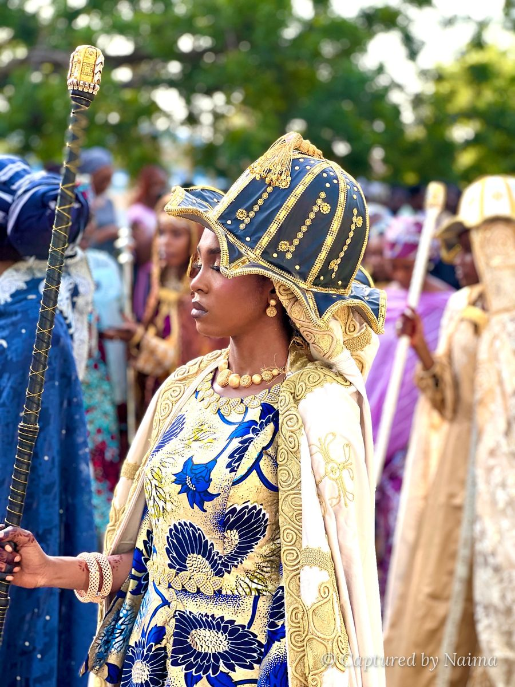

Captured
by Naima
Finding beauty in people, places, and moments through photography, capturing portraits, events, weddings, cultural traditions, and the joy and beauty that make every moment special.

Selected work
Two galleries to start with.
Cultural Carnival 2026
Cultural Carnival 2026 brought together different tribes and cultures, with the Yoruba, Igbo and Hausa each arriving in their finest traditional dress. I captured the colours, culture and craftsmanship that made the celebration unique.
What I shoot
See all servicesPortraits
Individual and creative portrait sessions, planned around your style, your colours and the mood you want.
Cultural coverage
Festivals, carnivals and ceremonies, photographed with care for the dress, the details and the people wearing them.
Events
From launches to celebrations, I cover the big moments and the small ones in between.
Weddings
Quiet looks, family moments and the celebration itself, photographed so you can relive the day.
Something else
If it is a moment worth remembering, tell me about it and we will work out the rest.
Have a moment worth remembering?
Tell me what you are planning and I will send you a quote.